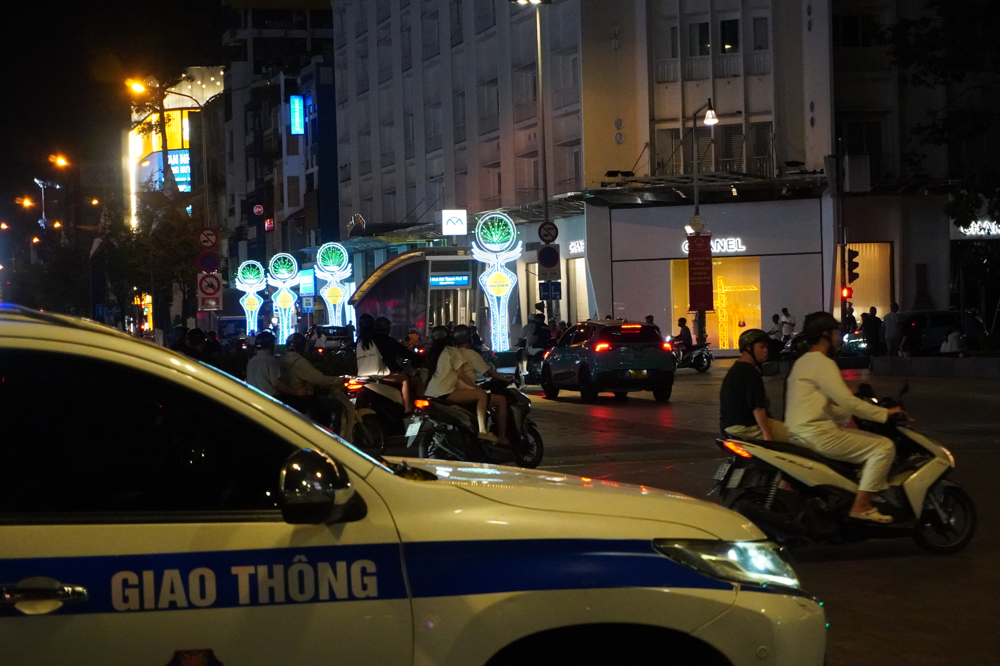
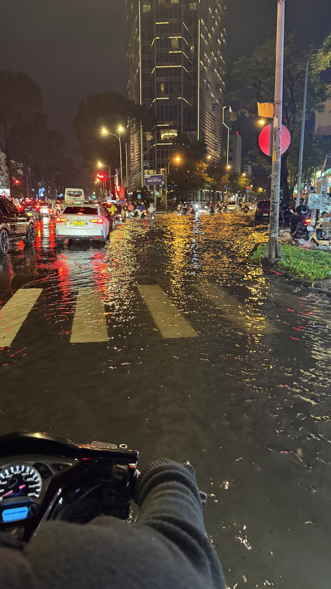
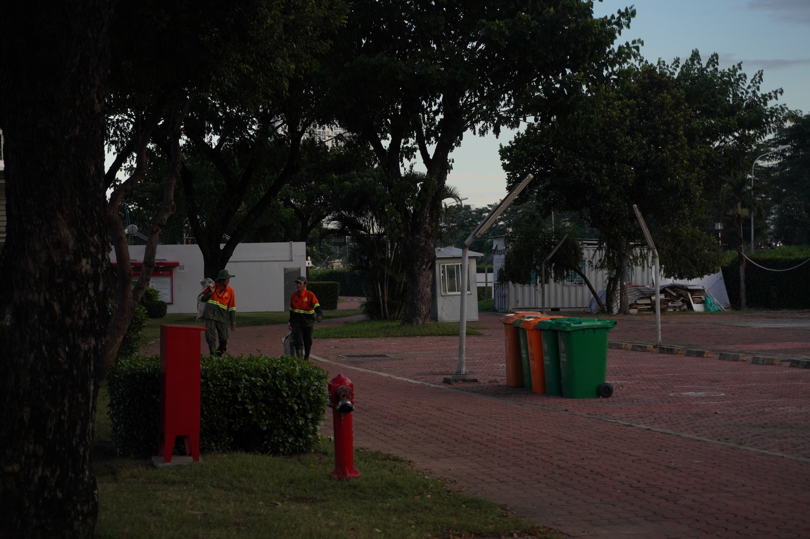
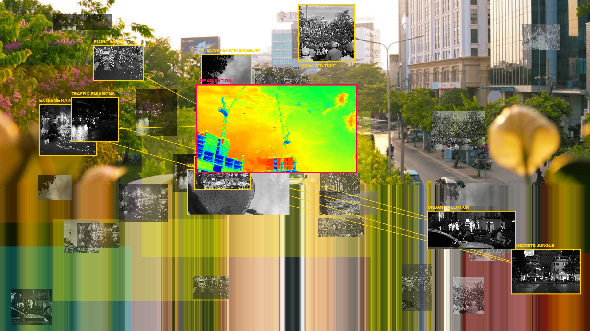

GLITCH CITY
This campaign aims to help people see and better understand climate change in Vietnam and around the world. I want to present the most direct and visual representations to show how climate change is happening in different ways across the globe. Through this, I hope to raise public awareness and encourage people to take action to help restore balance to the natural environment on Earth.
SCROLL TO EXPLORE ↓
The Problem
Climate change is a major environmental problem caused by human activities such as burning fossil fuels, deforestation and industrial production. These activities release greenhouse gases, leading to global warming and extreme weather. Climate change also threatens ecosystems, biodiversity, human health and food security, affecting both the environment and communities around us.
Source: Robinson D (2021) Problems brought on by climate change and the solutions, Earth.Org - Past | Present | Future, accessed November 25, 2026. https://earth.org/climate-change-problems-and-solutions/
Consequences
Climate change is intensifying environmental instability, making extreme weather more frequent, severe and unpredictable. In Vietnam, the forecast El Niño 2026–2027 may worsen these impacts, with temperatures expected to rise 0.5–1.5°C above the average, while seasonal rainfall may decrease by 10–30%. Prolonged heat, drought and saltwater intrusion threaten water supplies, agriculture and food security. Meanwhile, intense rainfall can trigger floods, landslides and urban inundation, damaging infrastructure and displacing communities. Rising temperatures also increase pressure on ecosystems, contribute to biodiversity loss and create greater risks of wildfires. These changes affect not only the environment but also human health, livelihoods and the future of communities.
Source: Công dân & Khuyến học (2026) Những hiện tượng thời tiết cực đoan cuối năm 2026, Congdankhuyenhoc.vn, accessed November 25, 2026. https://congdankhuyenhoc.vn/nhung-hien-tuong-thoi-tiet-cuc-doan-cuoi-nam-2026-179261009170136125.htm; Bảo Anh (2026) Nhận diện El Niño 2026-2027: Nắng nóng cực đoan, mưa LŨ dị thường, VietNamNet News, accessed November 25, 2026. https://vietnamnet.vn/nhan-dien-el-nio-2026-2027-nang-nong-cuc-doan-mua-lu-di-thuong-2537536.html


SDG 13 
SDG 13 focuses on taking urgent action to combat climate change and its impacts. Human activities increase greenhouse gas emissions, causing global warming, extreme weather, rising sea levels and damage to ecosystems. It encourages reducing emissions, protecting nature and adapting to climate change. A Glitch City visualises these impacts through distorted photographs, heatmap effects and glitches, reflecting how climate change disrupts our environment and daily lives.
Source: United Nations (2025) Climate change, United Nations, accessed November 25, 2026. https://www.un.org/en/global-issues/climate-change
DO IT NOW!!
“I believe humankind has looked at climate change in that same way: as if it were a fiction, happening to someone else’s planet.” — Leonardo DiCaprio
Bring climate closer: learn how climate change is affecting your community today.
Most of us have heard about climate change, but knowing it exists is different from understanding how it connects to our lives. As Leonardo DiCaprio said, “I believe humankind has looked at climate change in that same way: as if it were a fiction, happening to someone else’s planet.” His words challenge the distance we often put between ourselves and the crisis. SDG 13 calls for action on climate change, and understanding its local impacts can help us see where to begin.
Look beyond the headlines: discover how climate change is affecting your community today. The future is one day away, so your action starts on day one.
Source: DiCaprio L (2014) Leonardo DiCaprio at the UN: "Climate change is not hysteria – it's a fact," the Guardian, accessed November 25, 2026. https://www.theguardian.com/environment/2014/sep/23/leonarodo-dicaprio-un-climate-change-speech-new-york
Generative Art
This artwork was created using photos that I personally took, capturing random moments from the past to the present through my phone camera, digital camera, and even pictures I posted on Locket. Looking back at them, I suddenly realised that some of these photos clearly showed causes or extreme weather effects of climate change. That gave me the idea to use these personal photos to create my own generative art. By combining them with a heatmap effect and a melting, distorted background, I wanted to create a scene that could give viewers a stronger feeling of climate change and help them visualise it more easily.

Click the picture to open the art